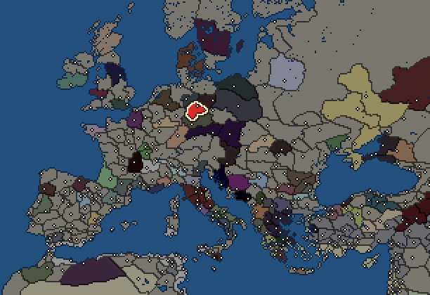
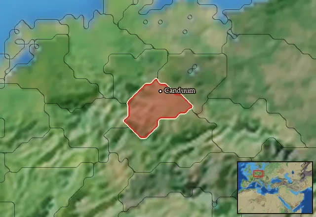

RTR: Imperium Surrectum
RTR: Imperium SurrectumChatti


- difficulty Difficult
- Germanic culture
- believes
 Germanic
Germanic - 1 settlement
- capital Canduum
- 5,800 manpower
- 2 characters
- 17 faction units
- 440 regional units
The campaign brief
"Other Germanics go to battle, the Chatti go to war." – Tacitus, Germania, 30
I am hundafadiz Hariulfus, your elected commander. From now on you will speak only when spoken to, and the first and last words out of your filthy sewers will be ‘fadiz!’
You yourselves elected me to this post and you will now obey my every word. In return I will turn you into living weapons. You will become part of the unbreakable cogs of the Chatti war machine. But for now, you are nothing. Until you slay your first foes in battle, you are barely human beings at all. Your faces will remain unshorn, like animals. Only once you stand triumphant over the bloody carcasses of your enemies, will you be permitted to reveal your faces and call yourselves men. Do you maggots understand that?
Good. Now, gaze upon the iron collar around my neck. It is the mark of a true warrior. Other nations who share our tongue may regard it as a token of servitude, but among us Chatti it symbolizes the utmost devotion and self-sacrifice in the service of our glorious nation. This ferrous circlet puts me above mortal concerns such as property or work. I am an instrument of death, set aside only for war. Always in the first line. Ever ready to vanquish our foes. Wherever I journey through our hallowed lands, every household opens its doors to me and stuffs my gullet with the victuals of life. Be proud and confident therefore in your choice of leader, for you chose wisely when electing me. I shall verily teach you the ways of war. And when the time comes to face down our foes in battle, you will be drilled to perfection!
We live in dangerous times and all Chatti men must ready themselves for war. The balance of power has shifted rapidly in recent days. Remember the Gallic host that just passed through our lands. When they came, we offered them our submission. But they were deceived. We only feigned subservience to conserve our forces. And when they asked for a contribution to their war across the Elbe, we only provided them a mere fraction of our fighters. Neither did we send them our best, for lo, I am still here! After tarrying a few days in our lands, and fattening themselves on our grain and livestock, the Gauls moved on to battle the Suebi across the Rhine. We now know the outcome of that confrontation. The Suebi won a crushing victory, and the Gallic host suffered utter annihilation.
Now the Celtic lands to the southwest are ripe for conquest. We must seize this opportunity to secure new living spaces for our growing nation. Unlike fools who bet their fortunes on winning swift victories in the field, we expect our campaigns in the southeast to drag on for years and are preparing ourselves accordingly. Our first goal is therefore to capture the salt fields near the Visurgis river to secure our offensive logistics with a steady supply of salted meat. At the same time, we are training reinforcements for our armies already in the field. Reinforcements means you, maggots.
We must also be vigilant, for a new power is rising: The Suebi Federation. Bonds of kinship may keep war at bay for now, but we must beware their swelling pride. One day they may very well point their spears our way. Yet, do not fear the Suebi. Perhaps you think that even the immortal gods themselves cannot stand against them if they defeated a Gallic host without number. The Suebi indeed pride themselves on their horsemen and consider all other cavalry their inferiors. So what? True Chatti fight on foot, and do not flail around like some flimsy horse clans. Indeed, the Suebians are in for a rude awakening if they try to trample our firm and ordered ranks. And should our discipline falter, a trench will not. Then we shall see if Suebian horses really can gallop on thin air, like the rumors claim. We are Chatti, and whether by spear or shovel, we always triumph!
Did I mention the horse clans by the way? Those scoundrels once again tarry to answer the call to arms. Even though they love prancing around on their little ponies, they are always late when there is actual fighting to be done. So much for the reliability of cavalry! Their infantry is late too, of course. As if they are more concerned with looking after their own hovels than contributing to the common good. Bah! I am no seer, but sooner or later horse clans’ lack of solidarity with their fellow Chatti is going to tear our nation apart.
Enough idle chitchat. Your training begins now. As you maggots require accommodation, we will start by constructing a fortified camp…
Starting diplomacy
Chatti begins the campaign with no allies, no trade agreements and no wars.
Like every faction, it is also at war with the  Free Peoples, who hold every settlement no faction does.
Free Peoples, who hold every settlement no faction does.
Starting characters
| Name | Role | Age | Name | Role | Age | ||||||
|---|---|---|---|---|---|---|---|---|---|---|---|
| Istio | General | 35 | Adgandestrius | General | 18 |
Reforms
Open to every faction: Military innovations have arrived!, Second wave of military innovations have arrived!.
Units you can recruit
The same as in the main campaign.
Starting settlements
Chatti begins with 1 settlement and 5,800 manpower.
What is already built in each settlement
Canduum, in Chattia: Governor's Villa, Wooden Palisade, Homeland, Region Information Scroll, Roads, Horse Trainer (Rural), Local Barter, Slash and Burn (Crops), Basic Armoury, Cisterns (Sanitation)
Homeland
Chatti's homeland is 1 region. Only there can it install the Homeland government (more on homelands).
